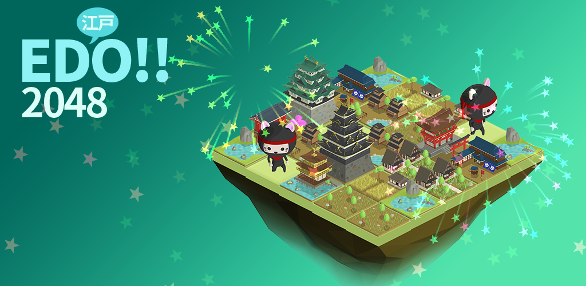
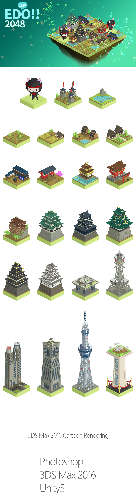

EDO!! 2048
아이소메트릭 건축 타일과 배너


프로젝트 소개
동일한 타일 규격 위에 전통 건축부터 현대 건축까지 다양한 실루엣을 구성했습니다.
담당 업무
- 게시물 제목에 배너·캐릭터·건물 디자인 기재
- 건축 에셋과 배너 시트 정리
기여 범위 및 사용 리소스
- 개별 건물의 외주·직접 제작 범위 및 인게임 UI 제작 분담은 미확인.
기술 및 툴
Gallery
건축 타일 세트
같은 시점과 규격에서 서로 다른 높이와 시대의 건축물을 비교할 수 있습니다.

